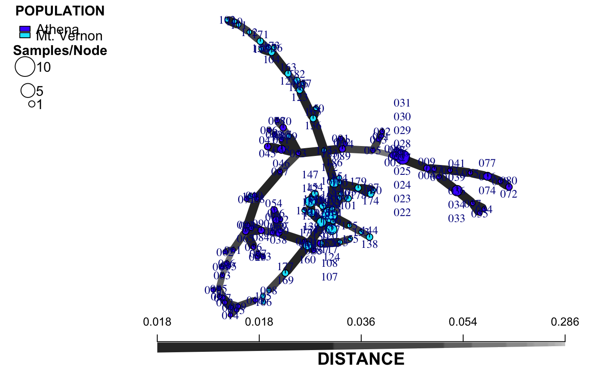

This function allows you to take the output of poppr.msn and bruvo.msn and customize the plot by labeling groups of individuals, size of nodes, and adjusting the palette and scale bar.
plot_poppr_msn(x, poppr_msn, gscale = TRUE, gadj = 3, mlg.compute = "original", glim = c(0, 0.8), gweight = 1, wscale = TRUE, nodescale = 10, nodebase = NULL, nodelab = 2, inds = "ALL", mlg = FALSE, quantiles = TRUE, cutoff = NULL, palette = NULL, layfun = layout.auto, beforecut = FALSE, pop.leg = TRUE, size.leg = TRUE, scale.leg = TRUE, ...)
| x | a |
|---|---|
| poppr_msn | a |
| gscale | "grey scale". If this is |
| gadj | "grey adjust". a positive |
| mlg.compute | if the multilocus genotypes are set to "custom" (see
|
| glim | "grey limit". Two numbers between zero and one. They determine
the upper and lower limits for the |
| gweight | "grey weight". an |
| wscale | "width scale". If this is |
| nodescale | a |
| nodebase | deprecated a |
| nodelab | an |
| inds | a |
| mlg |
|
| quantiles |
|
| cutoff | a number indicating the longest distance to display in your graph. This is performed by removing edges with weights greater than this number. |
| palette | a function or character corresponding to a specific palette you want to use to delimit your populations. The default is whatever palette was used to produce the original graph. |
| layfun | a function specifying the layout of nodes in your graph. It
defaults to |
| beforecut | if |
| pop.leg | if |
| size.leg | if |
| scale.leg | if |
| ... | any other parameters to be passed on to
|
the modified msn list, invisibly.
The previous incarnation of msn plotting in poppr simply plotted the minimum spanning network with the legend of populations, but did not provide a scale bar and it did not provide the user a simple way of manipulating the layout or labels. This function allows the user to manipulate many facets of graph creation, making the creation of minimum spanning networks ever so slightly more user friendly.
This function must have both the source data and the output msn to work. The source data must contain the same population structure as the graph. Every other parameter has a default setting.
inds By default, the graph will label each node (circle) with
all of the samples (individuals) that are contained within that node. As
each node represents a single multilocus genotype (MLG) or individuals (n
>= 1), this argument is designed to allow you to selectively label the
nodes based on query of sample name or MLG number. If the option mlg
= TRUE, the multilocus genotype assignment will be used to label the node.
If you do not want to label the nodes by individual or multilocus genotype,
simply set this to a name that doesn't exist in your data.
nodescale The nodes (circles) on the graph represent different
multilocus genotypes. The area of the nodes represent the number of
individuals. Setting nodescale will scale the area of the nodes.
nodelab If a node is not labeled by individual, this will
label the size of the nodes greater than or equal to this value. If you
don't want to label the size of the nodes, simply set this to a very high
number.
cutoff This is useful for when you want to investigate groups
of multilocus genotypes separated by a specific distance or if you have two
distinct populations and you want to physically separate them in your
network.
beforecut This is an indicator useful if you want to maintain
the same position of the nodes before and after removing edges with the
cutoff argument. This works best if you set a seed before you run
the function.
mlg.compute
argument, above.
greycurve and the
legend can be plotted with legend.
layout.auto plot.igraph
poppr.msn bruvo.msn greycurve
delete.edges palette
# Using a data set of the Aphanomyces eutieches root rot pathogen. data(Aeut) adist <- diss.dist(Aeut, percent = TRUE) amsn <- poppr.msn(Aeut, adist, showplot = FALSE) # Default library("igraph") # To get all the layouts.#> #>#> #> #>#> #> #>#> #> #>#> #> #>set.seed(500) plot_poppr_msn(Aeut, amsn, gadj = 15)# NOT RUN { # Different layouts (from igraph) can be used by supplying the function name. set.seed(500) plot_poppr_msn(Aeut, amsn, gadj = 15, layfun = layout_with_kk) # Removing link between populations (cutoff = 0.2) and labelling no individuals set.seed(500) plot_poppr_msn(Aeut, amsn, inds = "none", gadj = 15, beforecut = TRUE, cutoff = 0.2) # Labelling individual #57 because it is an MLG that crosses populations # Showing clusters of MLGS with at most 5% variation # Notice that the Mt. Vernon population appears to be more clonal set.seed(50) plot_poppr_msn(Aeut, amsn, gadj = 15, cutoff = 0.05, inds = "057") data(partial_clone) pcmsn <- bruvo.msn(partial_clone, replen = rep(1, 10)) # You can plot using a color palette or a vector of named colors # Here's a way to define the colors beforehand pc_colors <- nPop(partial_clone) %>% RColorBrewer::brewer.pal("Set2") %>% setNames(popNames(partial_clone)) pc_colors # Labelling the samples contained in multilocus genotype 9 set.seed(999) plot_poppr_msn(partial_clone, pcmsn, palette = pc_colors, inds = 9) # Doing the same thing, but using one of the sample names as input. set.seed(999) plot_poppr_msn(partial_clone, pcmsn, palette = pc_colors, inds = "sim 20") # Note that this is case sensitive. Nothing is labeled. set.seed(999) plot_poppr_msn(partial_clone, pcmsn, palette = pc_colors, inds = "Sim 20") # Something pretty data(microbov) mdist <- diss.dist(microbov, percent = TRUE) micmsn <- poppr.msn(microbov, mdist, showplot = FALSE) plot_poppr_msn(microbov, micmsn, palette = "terrain.colors", inds = "n", quantiles = FALSE) plot_poppr_msn(microbov, micmsn, palette = "terrain.colors", inds = "n", cutoff = 0.3, quantiles = FALSE) ### Utilizing vectors for palettes data(Pram) Pram_sub <- popsub(Pram, blacklist = c("Nursery_CA", "Nursery_OR")) # Creating the network for the forest min_span_net_sub <- bruvo.msn(Pram_sub, replen = other(Pram)$REPLEN, add = TRUE, loss = TRUE, showplot = FALSE, include.ties = TRUE) # Creating the network with nurseries min_span_net <- bruvo.msn(Pram, replen = other(Pram)$REPLEN, add = TRUE, loss = TRUE, showplot = FALSE, include.ties = TRUE) # Only forest genotypes set.seed(70) plot_poppr_msn(Pram, min_span_net_sub, inds = "ALL", mlg = TRUE, gadj = 9, nodescale = 5, palette = other(Pram)$comparePal, cutoff = NULL, quantiles = FALSE, beforecut = TRUE) # With Nurseries set.seed(70) plot_poppr_msn(Pram, min_span_net, inds = "ALL", mlg = TRUE, gadj = 9, nodescale = 5, palette = other(Pram)$comparePal, cutoff = NULL, quantiles = FALSE, beforecut = TRUE) # }